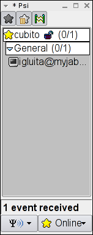
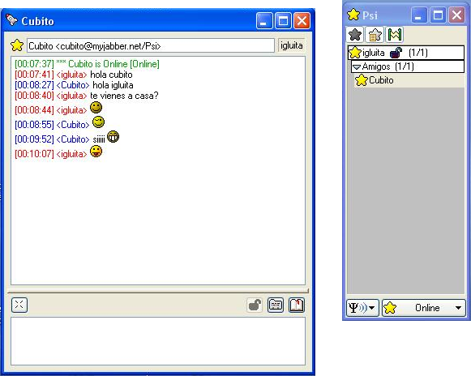

|
Jabber como medio de comunicación social libre. |
Anterior Indice Siguiente
Vamos a ver ahora como añadimos un nuevo contacto, las capturas siguientes mostrarán como nuestro amigo “cubito” realiza los pasos para añadir a su amiga “igluita” y a su vez veremos también las pantallas que le aparecen a “igluita” cuando se le solicita ser incorporada a la lista de contactos de otro usuario.
En primer lugar seleccionamos añadir un contacto (“+ Add a contact”) en el menú que se encuentra en la esquina inferior izquierda. Después debemos introducir los datos de la persona a la que queremos añadir como contacto. Bastará con poner la cuenta de la persona que queramos agregar (nombre@servidor.nnn) y pulsamos añadir (“Add”).
| 1. CUBITO | 2. CUBITO |
 |
 |
La persona que hemos agregado recibe un aviso de que alguien ha solicitado agregarla como contacto. Para aceptar el nuevo contacto pulsamos Añadir/autorizar (“Add/Auth”). Automáticamente a la persona que ha solicitado el contacto le aparece la misma solicitud, ya que al aceptar ser añadido también se añade a la otra persona, con lo que el otro debe aceptar también estar en la lista de contactos de las personas con las que desea contactar
| 3. IGLUITA | 4. CUBITO |
 |
 |
| 5. CUBITO | 6. IGLUITA |
 |
 |
Anterior Indice Siguiente